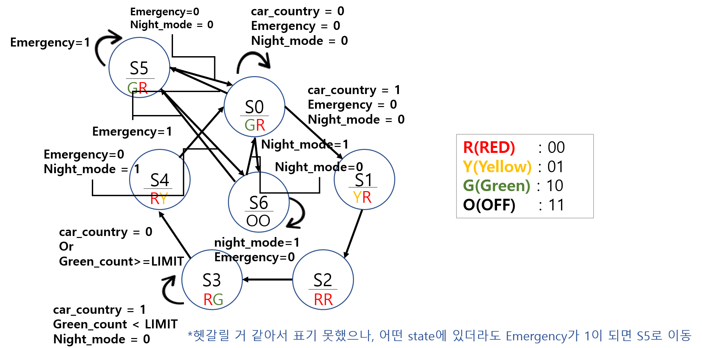
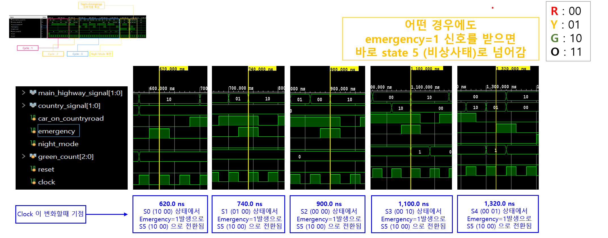
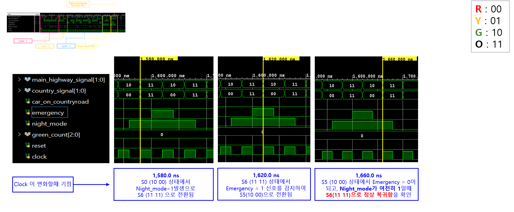

01 · OVERVIEW
기본 신호등 FSM을 실제 상황에 맞게 확장
기본 구조는 Main Highway와 Country Road의 신호를 순차적으로 전환하는 FSM입니다. 본 프로젝트에서는 단순 정상 주기만 구현하는 데서 그치지 않고, 응급상황과 야간 운용, Country Road Green 상태의 무한 유지 문제를 보완했습니다.
02 · ADDED FEATURES
세 가지 기능 추가
- Emergency Mode
일반 상태 S0–S4와 Night Mode S6에서 emergency 입력이 들어오면 S5로 이동해 Main Highway Green을 우선 출력합니다. - Country Road Green Time Limit
S3에서만 증가하는 green_count와 GREEN_LIMIT를 이용해 차량 감지가 계속되어도 Country Road Green이 무한히 유지되지 않도록 했습니다. - Night OFF Mode
남는 2-bit 출력값 11을 OFF로 정의하고 S6에서 두 신호등을 모두 소등하되 emergency 입력은 계속 우선 처리합니다.
03 · FSM DESIGN
7-state Moore FSM

| State | Main Highway | Country Road | Role |
|---|---|---|---|
| S0 | Green | Red | Default |
| S1 | Yellow | Red | Main transition |
| S2 | Red | Red | All Red |
| S3 | Red | Green | Country Green |
| S4 | Red | Yellow | Country transition |
| S5 | Green | Red | Emergency |
| S6 | OFF | OFF | Night OFF |
입력 우선순위는 emergency → night_mode → normal traffic condition 순으로 구성했습니다.
04 · VERILOG STRUCTURE
State Register · Next State Logic · Output Logic
FSM style-1 구조를 사용해 현재 상태 저장, 조합논리 기반 다음 상태 결정, Moore 출력 논리를 분리했습니다. green_count는 clock 상승 edge에서 현재 state가 S3일 때만 증가합니다.
05 · TESTBENCH
입력 시나리오 기반 기능 검증
| Test | Verification Target |
|---|---|
| Reset | S0 초기화와 기본 출력 |
| Normal Cycle 1 | 차량 유지 시 GREEN_LIMIT에 의한 S3 종료 |
| Normal Cycle 2 | 차량 제거 시 즉시 S3 → S4 |
| Emergency | S0–S4 어느 상태에서도 S5 진입 |
| Night Mode | S6에서 두 신호등 OFF |
| Night + Emergency | S6 → S5 → S6 복귀 |
06 · BEHAVIORAL SIMULATION
파형으로 기능별 동작 확인


green_count는 S3에서만 증가하고, 모든 기능은 clock edge 기준으로 상태 전이를 거쳐 출력에 반영되는 것을 확인했습니다.
07 · VERIFICATION SCOPE
검증 범위 및 향후 확장
본 프로젝트는 Verilog RTL 설계와 Vivado behavioral simulation을 통해 FSM 상태 전이, 입력 우선순위 제어 및 Country Road Green 시간 제한 기능을 검증했습니다.
현재 검증 범위는 behavioral simulation이며, FPGA 보드 구현, 실제 I/O 연결, synthesis 및 timing 검증은 향후 확장 범위입니다.
08 · RESOURCES